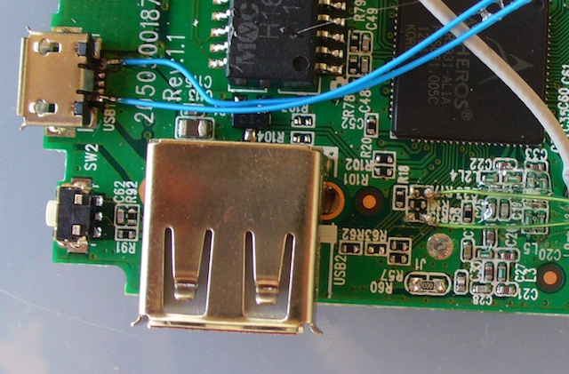

Adding an I2C interface to the TL-WR703N
15 Aug 2012
The goal
To enable the creative use of the wireless router in the garden to do all kinds of fun stuff. My first insane ideas are things like:
- Closing the chicken coop door (determined by remote control or automatically)
- Making a feed dispenser, so that the chickens may be tempted to be close to the camera
- Counting and logging the egg laying productivity (and the chickens’ noise?)
- Monitoring the solar panels and battery charge status.
That’s just the start…
Approach
Because of the promising reports for at least 2 GPIO pins in the TL-WR703N, I was looking for an interface that supports powerful actions, with the minimum of wires. In the end, I chose I2C because a cursory web search showed all kinds of cool chips that support it, and because of the low complexity. SPI needs addressing, that I was not sure I coud deliver, and 1-wire is only suited to a very limited array of devices. Serial communication could have worked, but this is not very robust against jitter (and we will be bit-banging) and demands a lot from each client. So: I2C it is!
Adding I2C interface
All the background information that I used came from the kind people that generated their knowledge to the Openwrt forums. I pretty much copied that what they did before. A few points are critical:
- The parts are really really small. Take a lot of care, use a very sharp soldering iron and use magnification.
- The traces in the router are easily peeled off. Do not apply vertical forces and make sure to releive any forces on the wires. I epoxied all wires to the PCB after soldering to prevent them from pulling the PCB traces.
These were the steps:
- Remove R15 and R17.
- Solder very thin wires to each pad (the side facing away from the USB connector)
- Solder a +3.3V wire to the square field marked
LED2 + - Solder a GND wire to the micro-USB connector (reset button side)
- Solder a +5V wire to the other side of the micro-USB connector (Ethernet side)
- Glue the wires to the PCB using 2-component epoxy adhesive.
…although the micro usb wires may be the other way around…

Then I cut a hole into the top of the housing and glued a 2x3 boxed header onto the lid of the router. I chose the following pin-out in an attempt to keep the signal wires apart:
- 5V
- NC
- SCL (GPIO7, 3.3V)
- GND
- SDA (GPIO 29, 3.3V)
- 3.3V
That’s how it looks:
No Pull-ups yet, so these need to be put on the client side, or built in later.
Installing on Openwrt
The OpenWRT wiki has loads of (some more outdated than other) stuff on I2C at this link. Let’s start with the basics:
> opkg update
> opkg install i2c-tools
>opkg install kmod-i2c-gpio-custom
Installing kmod-i2c-gpio-custom (3.3.8-2) to root...
Downloading http://192.168.1.100/downloads.openwrt.org/snapshots/trunk/ar71xx/packages/kmod-i2c-gpio-custom_3.3.8-2_ar71xx.ipk.
Collected errors:
* satisfy_dependencies_for: Cannot satisfy the following dependencies for kmod-i2c-gpio-custom:
* kmod-i2c-algo-bit *
* opkg_install_cmd: Cannot install package kmod-i2c-gpio-custom.
So we are missing kmod-i2c-algo-bit. A quick check on the downloads page for trunk shows it missing there, too. But I really need it.
**So now what? **
Left over from
my experiments with compiling OpenWRT on OS X was a local compile directory that actually
successfully compiles. So I went in there and did a make
menuconfig. When I installed all the I2C stuff, it automatically
enables the i2c-gpio-custom module. And after make, it also
compiles the matchin object file. But no .ipk to match. Where did it
go…?
After a bit of searching it was
found. trunk/build_dir/linux-ar71xx_generic/linux-3.3.8/modules.builtin
tells exactly where it went: into the kernel (built-in, not as a
module). Here’s a list of all the stuff that was builtin:
kernel/fs/jffs2/jffs2.ko
kernel/fs/overlayfs/overlayfs.ko
kernel/fs/squashfs/squashfs.ko
kernel/crypto/crypto.ko
kernel/block/deadline-iosched.ko
kernel/drivers/base/firmware_class.ko
kernel/drivers/gpio/gpio-nxp-74hc153.ko
kernel/drivers/gpio/gpio-pcf857x.ko
kernel/drivers/i2c/i2c-core.ko
kernel/drivers/i2c/algos/i2c-algo-bit.ko
kernel/drivers/i2c/busses/i2c-gpio.ko
kernel/drivers/mtd/mtd.ko
kernel/drivers/mtd/redboot.ko
kernel/drivers/mtd/myloader.ko
kernel/drivers/mtd/tplinkpart.ko
kernel/drivers/mtd/wrt160nl_part.ko
kernel/drivers/mtd/mtdchar.ko
kernel/drivers/mtd/mtd_blkdevs.ko
kernel/drivers/mtd/mtdblock.ko
kernel/drivers/mtd/chips/chipreg.ko
kernel/drivers/mtd/chips/cfi_probe.ko
kernel/drivers/mtd/chips/cfi_util.ko
kernel/drivers/mtd/chips/cfi_cmdset_0002.ko
kernel/drivers/mtd/chips/gen_probe.ko
kernel/drivers/mtd/chips/jedec_probe.ko
kernel/drivers/mtd/devices/m25p80.ko
kernel/drivers/mtd/maps/map_funcs.ko
kernel/drivers/mtd/maps/physmap.ko
kernel/drivers/net/mii.ko
kernel/drivers/net/dsa/mv88e6060.ko
kernel/drivers/net/ethernet/atheros/ag71xx/ag71xx.ko
kernel/drivers/net/phy/libphy.ko
kernel/drivers/net/phy/swconfig.ko
kernel/drivers/net/phy/marvell.ko
kernel/drivers/net/phy/ip17xx.ko
kernel/drivers/net/phy/ar8216.ko
kernel/drivers/net/phy/rtl8306.ko
kernel/drivers/net/phy/rtl8366_smi.ko
kernel/drivers/net/phy/rtl8366s.ko
kernel/drivers/net/phy/rtl8366rb.ko
kernel/drivers/net/phy/rtl8367.ko
kernel/drivers/net/phy/micrel.ko
kernel/drivers/spi/spi-ap83.ko
kernel/drivers/spi/spi-ath79.ko
kernel/drivers/spi/spi-bitbang.ko
kernel/drivers/tty/serial/serial_core.ko
kernel/drivers/tty/serial/8250/8250.ko
kernel/net/802/p8022.ko
kernel/net/802/psnap.ko
kernel/net/802/stp.ko
kernel/net/8021q/vlan_core.ko
kernel/net/8021q/8021q.ko
kernel/net/bridge/bridge.ko
kernel/net/dsa/dsa_core.ko
kernel/net/ipv4/tcp_cubic.ko
kernel/net/llc/llc.ko
kernel/net/packet/af_packet.ko
kernel/net/unix/unix.ko
kernel/lib/bitrev.ko
kernel/lib/crc32.ko
kernel/lib/lzma/lzma_compress.ko
kernel/lib/lzma/lzma_decompress.ko
kernel/lib/xz/xz_dec.ko
So, something is wonky with Openwrt. Either one of the two:
- The kernel config automatically configures the module as a builtin and ignores my wish to have it as a module.
- The package
kmod-i2c-gpio-customincorrectly forces the dependency tokmod-i2c-algo-bit, while indeed it is builtin by default.
I do not understand the kernel enough to know who’s wrong, but the solution is clear:
> opkg install --force-depends kmod-i2c-gpio-custom
Installing kmod-i2c-gpio-custom (3.3.8-2) to root...
Downloading http://192.168.1.100/downloads.openwrt.org/snapshots/trunk/ar71xx/packages/kmod-i2c-gpio-custom_3.3.8-2_ar71xx.ipk.
Installing kmod-i2c-gpio (3.3.8-1) to root...
Downloading http://192.168.1.100/downloads.openwrt.org/snapshots/trunk/ar71xx/packages/kmod-i2c-gpio_3.3.8-1_ar71xx.ipk.
Configuring kmod-i2c-gpio.
Configuring kmod-i2c-gpio-custom.
Collected errors:
* satisfy_dependencies_for: Cannot satisfy the following dependencies for kmod-i2c-gpio-custom:
* kmod-i2c-algo-bit *
But does it work?
> insmod i2c-gpio-custom bus0=0,29,7
> dmesg |tail
[ 711.120000] Custom GPIO-based I2C driver version 0.1.1
[ 711.120000] i2c-gpio i2c-gpio.0: using pins 29 (SDA) and 7 (SCL)
[ 712.920000] br-lan: port 1(eth0) entered forwarding state
Success?
The first IO test
I made a breadboard with the PCF8574 IO expander from Texas
Instruments (also available from NXP, but TI gives free samples). It
takes the 3.3V power from the router, pulls up and has 8 LEDs from
3.3V to the pins of the PCF8574. Maybe I’ll write an update about
the breadboard later, but it’s mainly just the datasheet
application. Later I switched to 5V and added level shifting MOSFETs,
again, maybe some day I’ll write it up.
# i2cdetect 0
WARNING! This program can confuse your I2C bus, cause data loss and worse!
I will probe file /dev/i2c-0.
I will probe address range 0x03-0x77.
Continue? [Y/n]
0 1 2 3 4 5 6 7 8 9 a b c d e f
00: -- -- -- -- -- -- -- -- -- -- -- -- --
10: -- -- -- -- -- -- -- -- -- -- -- -- -- -- -- --
20: 20 -- -- -- -- -- -- -- -- -- -- -- -- -- -- --
30: -- -- -- -- -- -- -- -- -- -- -- -- -- -- -- --
40: -- -- -- -- -- -- -- -- -- -- -- -- -- -- -- --
50: -- -- -- -- -- -- -- -- -- -- -- -- -- -- -- --
60: -- -- -- -- -- -- -- -- -- -- -- -- -- -- -- --
70: -- -- -- -- -- -- -- --
It works!
# echo pcf8574 0x20 > /sys/bus/i2c/devices/i2c-0/new_device
# dmesg | tail
[ 153.590000] Custom GPIO-based I2C driver version 0.1.1
[ 153.590000] i2c-gpio i2c-gpio.0: using pins 29 (SDA) and 7 (SCL)
[ 651.600000] gpiochip_add: registered GPIOs 56 to 63 on device: pcf8574
[ 651.600000] pcf857x 0-0020:
[ 651.610000] i2c i2c-0: new_device: Instantiated device pcf8574 at 0x20
Sounds good: we have a chip at the correct address, and 8 new GPIOs
were created (numberd 56 through 63). Careful though: the PCF8574
does not get detected in any way. So only the i2cdetect output
really confirms that something is there on the bus and responding. So let’s test the GPIOs for
confirmation.
Actually blinking LEDs
Let’s try to set one of the pins manually:
# cd /sys/class/gpio
# echo 57 > export
# echo out>gpio57/direction
# echo 0 > gpio57/value
Upon setting output, the LED lights up. Success!
The output chip is open drain-ish (quasi bidirectional) and could
probably have
been connected with the LEDs oriented to light with the pin set to
1. The chip then controls the current through an internal current
source. I did it the other way around, with the cathode connected to
the output pin. So now, we are able to control each output pin
individually from userspacs, just by writing to the filesystem. Much,
much more than I had ever dreamed. Even shell scripts can work with
the outputs and inputs. Wicked.
The next step: blinking. I was lazy and googled for a bash script that blinks. And found it on this blog. Tweaked it a little bit, which was easy because it’s so well written. I added an argument for the GPIO pin to use, to try all 8 pins. This is what I ended up with:
#!/bin/bash
# blink_arg.bash -- must run as root!
#
# Blink GPIO pin on and off
LEDPIN=${1-57}
OFF=1
ON=0
# Make sure we have root access
if [ $EUID -ne 0 ]; then
echo "You must be root to run this. Try 'sudo $0'"
exit
fi
# Clean up procedure--turn off the LED, unexport the GPIO, and exit
cleanup()
{
PIN=$1
echo $OFF > /sys/class/gpio/gpio$PIN/value # turn off
echo $PIN > /sys/class/gpio/unexport
echo Interrupted.
exit
}
# Set up--select the pin and direction. Catch Control-C SIGHUP SIGKILL
echo $LEDPIN > /sys/class/gpio/export
echo out > /sys/class/gpio/gpio$LEDPIN/direction
trap 'cleanup $LEDPIN' 1 2 15
while true
do
echo $ON > /sys/class/gpio/gpio$LEDPIN/value # turn on
sleep 1
echo $OFF > /sys/class/gpio/gpio$LEDPIN/value # turn off
sleep 1
done
And it works as expected. So now for some fun (we did not get all this linux power for nothing!).
# ./blink_arg.bash 56&
# ./blink_arg.bash 57&
# ./blink_arg.bash 58&
# # ... etcetera ...
So using all the cool multitasking goodness to do nothing special at all. How does that look?
Input
The next step is to use the input function. That will be the next update.